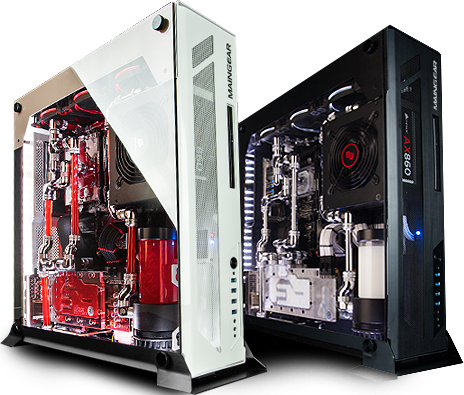

Case Project
like... a tower case

×

Computers are used all the time in every day life, but what makes the computer run the way it does? This website is designed to help with knowing the parts of a computer, and what exactly it does.